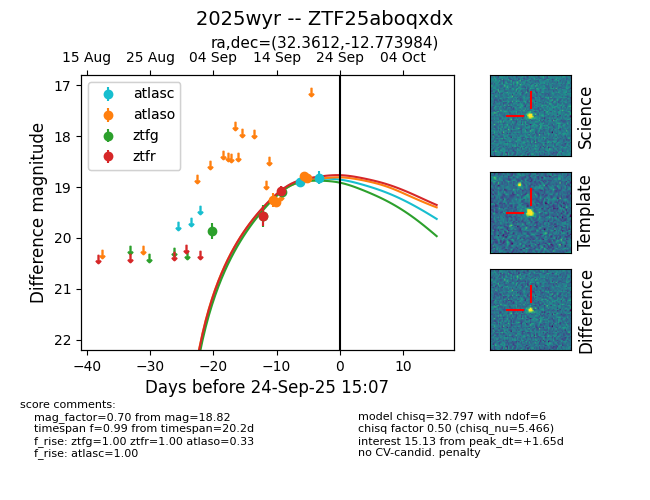
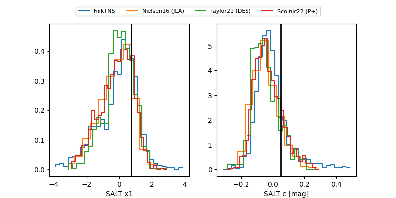

FINK: ZTF25aboqxdx
Lasair: ZTF25aboqxdx
ALeRCE: ZTF25aboqxdx
TNS: 2025wyr
YSE: 2025wyr
ZTF25aboqxdx (ztf,fink)
2025wyr (tns,yse)
equatorial (ra, dec) = (32.3612,-12.77398)
galactic (l, b) = (178.5942,-66.77853)


last atlasc=18.82, atlaso=18.83, ztfg=19.10, ztfr=19.09
2 atlasc, 4 atlaso, 3 ztfg, 2 ztfr detections